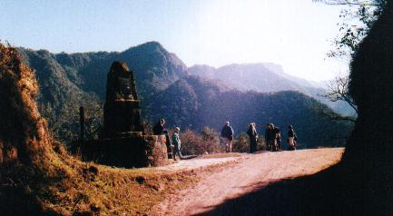
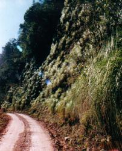

Miércoles 26 a las 7:00 El gallo había cantado más temprano hoy. Con su característica diplomacia, Hernán, a la vez guía y vocero oficial de los safaris de la AOP, nos había indicado la noche anterior que hoy las actividades debían comenzar más temprano. Tendríamos que viajar casi 2 horas en el micro, siempre por el mismo camino, hasta el Monolito, a 1.700m de altura, y de nada servía llegar a ese lugar privilegiado a las 11 de la mañana, por que ya a esa hora no habría pajaritos. Había que madrugar un poco más. Germán, por su lado, en su sutil metodología de persuasión, aclaró que los organizadores del campamento desechaban terminantemente utilizar técnicas colectivas de resucitación matinal. Por ejemplo, no habría campanadas, ni toque de clarín, ni las conocidas voces de: "¡¡¡ARRIBA!!! ¡¡¡YA ESTA EL DESAYUNO!!!". Al menos no oficialmente... Creo que Germán dejaba la puerta abierta para que algún voluntario emita un "bostezo matinal" muy, pero muy exagerando... No oí ningún bostezo, pero sin embargo a las 6:15 fui arrancado de mi sueño por ruidosos y fuertes golpes. Eran los sonantes y retumbantes hachazos de algún ayudante del campamento. ¿Germán, tal vez? Quizá deba agradecer al hachador, por que sino hubiera perdido no solo el desayuno, sino la excursión. Había que estar saliendo a las 8 de la mañana. Bueno, 8:30. Por que a esa hora pasaba un colectivo "charteado" que nos subiría al Monolito. A las 8:45 todavía había algunos rezagados que llegaban despreocupados al estacionamiento, donde estaba la "parada" del colectivo. Una vez allí, sorprendidos, casi espantados, notaron que la parada estaba desierta. ¡No había nadie! ¿Dónde están todos? "Nos dijeron 8:30. ¿Qué horas es?" Sus rostros se marcaron con expresiones de incredulidad y desilusión por haber perdido el colectivo hasta el Monolito. Pero en realidad solamente habían caído en nuestra trampa. Es que con gran picardía nos habíamos escondido en silencio detrás de nuestro micro de larga distancia, que seguía estacionado allí. Pero, ¿y el colectivo? Ya eran las 9:15 y no aparecía. Para entonces Germán, que había coordinado el charter y tanto había insistido con madrugar, temía ser linchado. Bueno, al fin llego nuestro "charter". Esta vez me senté en la ventanilla del otro lado. Pero fue un castigo mayor, por que los precipicios aquí eran más espantosos aún. No entiendo como el colectivo tomaba curvas pisando los mismísimos bordes de barrancos embarrados, en las que precisamente el barro parecía ser el único sustento estructural del camino. En las curvas podía apreciar como esas mismas banquinas, similares a las que veníamos pisando, habían cedido. En muchos casos la parte del camino colapsado yacía ahora reducida a un puñado de tierra aferrado a laderas casi verticales. Más adelante consulté al chofer si alguna vez hubo un vuelco o caída de un vehículo por el precipicio. "No", me respondió. Tal vez fue una mera sugestión, pero parecía que la altura me iba afectando. El camino seguía serpenteando por las laderas, tan sinuoso como había sido ayer el arroyo Negrito: curva tras curva. Por continuar siempre en ascenso me sugestionaba aún más, y sentía un leve mareo. Habíamos pasado ya Mesada, y más arriba comenzábamos a ingresar en otro tipo de vegetación: el "Bosque Montano", donde la maraña de arbustos y lianas comenzaba a ceder su lugar. Ahora eran musgos colgantes, denominados "barba de viejo", que comenzaban a adornar el bosque. Estas decoraciones navideñas cubrían cada vez más todas las ramas de los arboles, ahora casi sin hojas por la época del año. Sus troncos y ramas expuestas se revestían entonces con esas gasas colgantes de tonalidades ocre-oliváceas.  Finalmente llegamos a la cima. No recuerdo haber visto mesa en Mesada, pero ¡acá sí que había un verdadero monolito! De ese punto se comandaba una estupenda vista del valle que se desplegaba hacia el otro lado de la montaña. Otros cerros más altos se extendían hacia el norte y al oeste, pero esta altura me bastaba por hoy. Habíamos llegado al extremo occidental del Parque Nacional. Los botánicos del grupo nos indicaron las coníferas autóctonas que aparecen a estas alturas, que observé detenidamente. Como anticlimax de haber llegado a la cima, pasó una bandada de Cabecitanegras, tan comunes en Buenos Aires. Al menos era bueno saber que también habitan a esta altitúd.Estaba a 1.700 m y me sentía afectado por la falta de oxígeno. Al charlar un momento con el chofer, acudió a mi auxilio entregándome unas hojitas de coca. ¿Yo drogarme? Bueno, ya había escuchado las explicaciones académicas: una cosa es la hoja y otra los extractos a base de coca. "Colocalo en la mejilla y lo mordés de tanto en tanto." Acepté. Enseguida sentí un gustito similar al tabaco. Pero el mareo, lo tuve igual... ¿Y ahora? Hernán anunció: "El plan es el siguiente: los que quieren pueden caminar cuesta abajo hasta Mesada. El colectivo comienza a bajar del Monolito a Mesada a la 1 de la tarde. De allí partirá de regreso al campamento a las 5." Nos desbandamos. Mientras Nico se unió al grupo con los guías, el telescopio, y los más conocedores que avanzaron por el camino, yo pretendí aprovechar la tranquilidad para fotografiar un pequeño pajarito que me había impresionado. Era la primera vez que lo veía, y al consultar la Guía aprendí que se llama Cerquero Cabeza Castaña, de cabecita casi anaranjada y cuerpo oliváceo. Compartía la bandadita con Cerqueros de Collar, otra joya adornada con limpísimos blancos en la cabeza. Estaba decidido a tomar unas buenas fotos de estos tesoritos que habitan las alturas. Mi primera estrategia era acercarme despacio. Pero la bandadita se alejaba también despacio, saltando de arbusto en arbusto. Tuve que recurrir al Plan B: me quedaría sentado en un lugar tranquilo y seguramente la bandadita iba a volver. Más de 25 valiosos minutos esperé sentado en la ladera de la sierra, sin suerte alguna. Plan C: buscaría un lugar muy poblado de estas aves, con el sol correctamente ubicado para fotografiarlas, y me instalaría para almorzar. Tarde o temprano tendrían que volver. Aparte de disfrutar el arroz con atún, el sitio me sirvió para observar una Ratona Ceja Blanca: otra especie nueva para mi lista. Pero de fotos nada. Ya era mediodía y todavía no había gatillado algo que valía la pena. Terminé de almorzar. Tenía que agudizar el ingenio para cumplir mi objetivo. Ninguna de mis estrategias me había dado resultado y el tiempo pasaba. Entonces, semidesvanecido por la altura, razoné mi Plan D. Había notado que las bandaditas siempre se alejaban despacio. El alejamiento grupal era la consecuencia de las acciones de cada individuo: pequeños saltitos de rama en rama, casi aleatorios y apenas dirigido por su instinto defensivo. Si hacía entonces un ataque sorpresa, irrumpiendo de un salto, súbitamente en el seno de la bandadita, tal vez tendría unos segundos de tiempo hasta que las aves reaccionen, organicen su retirada, y se alejen. ¡Sí! ¡Eso tenía que funcionar! ¡Solo me faltaba el disfraz del Chapulín Colorado! Entusiasmado, guardé lo que quedaba de mi almuerzo, preparé la cámara, cargué la mochila, y salí a conquistar a los cerqueros. Estaban allí: en la colina que subía al camino había una parejita. Junté fuerzas para un asalto que haría corriendo cuesta arriba por la escarpada pendiente, cargado con mochila, camara y binoculares, entre arbolitos con ramas secas a la altura de mis ojos, cascotes que se desmoronaban, piedras y pasto alto que escondían víboras de coral, todo a 1.700m de altura... El esfuerzo físico fue demasiado: el Plan D había fracasado aún antes de empezar. Tras haber hecho un explosivo desgaste de energía y haber tropezados dos veces, llegué hasta el camino, absolutamente agotado y exhausto, y sin fotos... Triste y frustrado de no haber logrado mi objetivo, abandoné mi proyecto fotográfico. Era hora de volver. Al menos tendría una hora de caminata para disfrutar la observación de aves en soledad, tal como había hecho ayer. Después pasaría el colectivo que me bajaría hasta Mesada. Avancé por el camino, pero advertí que más adelante efectuaba una gran vuelta "en U", y luego volvía a resurgir unos 20 metros más abajo. Si bajaba por esta barranca empinada, llegaría al camino por un atajo, ahorrándome de caminar doscientos o trescientos metros. Entre patinadas y tropezones, finalmente pude bajar. Feliz y contento y definitivamente encaminado, me propuse pasar otro día de puro deleite, recorriendo nada más ni nada menos... ¿Y mi teleobjetivo? ¡Sí! ¡¿Dónde estaba el teleobjetivo de mi cámara?! Mi valiosa lente zoom de 210mm había desaparecido. Tras un momento de análisis descarté diversas posibilidades, salvo una: en uno de los tropezones se habrá desprendido de la cámara, pero... ¿Donde? ¿La encontraré? Me sofocaba la idea de volver a ascender: Ya sea por causas reales o por sugestión psicológica, la altura me había hecho sentir muy mal. Recién me había mentalizado para un largo pero relajado descenso, y ahora las circunstancias me obligaban a volver a subir... ¡Qué castigo! Estaba realmente sin aire, y me agobiaba sólo pensar en el esfuerzo que significaría subir mi propio peso, sumado al de mi mochila, hasta el lugar donde había almorzado. Pero mi pena habría sido mayor de haber sabido entonces que, hasta dar con mi lente, tendría que realizar el circuito completo no una sinó dos veces. Es más, creo que simplemente hubiera dejado atrás a la lente. ¿Una sagrada ofrenda para Calilegua tal vez? ¿En cual de los dos barrancos estaría? Debía regresar a dos sitios exactos, volviendo sobre mis pasos. No pude subir el empinado barranco, desmoronado y cubierto de vegetación, así que opté por otro itinerario. Alcancé el lugar supuesto, pero el "tele" no aparecía. Bajé el segundo barranco esperando encontrar la lente allí. Tampoco. Volví a subir, recorriendo muy minuciosamente todos los sectores donde posiblemente había tropezado. El esfuerzo de ascender nuevamente me aplastaba. Pero lo hice. Volví en sentido inverso, y finalmente llegué al lugar donde estaba la lente. Pero no la veía. Desesperado, avisé a la única persona que quedaba aún en zona, la muy querida Zully, que estaba a unos 50 metros de allí. "¡Zully! ¡Perdí mi tele!" Le grité. Y así, siendo casi la una de la tarde, en compañía de Zully, comenzamos el regreso.  Hicimos casi todo el recorrido a pie, salvo unos 1.000 metros "colados" en el colectivo cuando éste nos alcanzó en su camino a Mesada. Con razón, Zully no quería perderse la mejor parte de la selva montana, de características únicas. Por eso le pedimos al chofer que se detenga y nos bajamos al poco tiempo de subir. En el largo recorrido de 10 Km. no vimos muchas aves, si bien el paisaje de la selva era hermoso. Para superar mi decaimiento Zully trató de ayudarme a apreciar mejor los distintos tipos de arboles, todos cubiertos de "Barba de Abuelo" verde militar. En algunos barrancos al borde del camino crecía "sevendillo", un pasto colgante.Tras mucho caminar, durante más de 2 horas, finalmente nos acercamos a Mesada. Pero unos 300m antes de llegar me quede a observar sólo. Comenzaron a aparecer algunas aves, seguramente por la hora del día. Allí vi al magnífico Batará Gigante. Esta vez se trataba de un macho, cuyo colorido es muy distinto al de la hembra. Precisamente a las 5 en punto de la tarde, es decir, la hora de reunión señalada para tomar el colectivo de vuelta al campamento, hice mi entrada triunfal en Mesada. En ese momento la comitiva estaba justamente abordando el colectivo. Estaba ansioso de comentar a mis compañeros las mil penurias que había sufrido. Seguramente los demás no tendrían nada interesante que contar. Que ingenuo... Apenas me acerqué al colectivo, Germán me dirigió la palabra: "Alec, te tenemos que dar dos noticias: una buena y una mala: La buena es que vimos una Poma, y la mala... Nico ha desaparecido." ... "¿Poma?" ...reflexioné unos instantes... Se trataba de un águila. En ese primer momento realmente no comprendía la magnitud de la noticia. Sin embargo, lentamente fui razonando. Es que no conocía ni el nombre de esta especie, sencillamente por que descartaba toda posibilidad de ver bichos tan raros. De golpe me di cuenta... ¿¿¿¡¡¡¡AGUILA POMA!!!!???" Una de las mayores presas, un verdadero tesoro que los ornitólogos más optimistas no pueden ni atreverse a soñar siquiera. ¿Sería esto otra buena broma de Germán? Una mirada a los pasajeros, mis colegas del grupo, confirmaba que esto iba muy en serio: todos silenciados y con cara de circunstancia, me miraban fijamente, esperando ver como yo, el flamante paria de "la sociedad que vio la Poma", iba a reaccionar. ¿Lloraría? ¿Me tiraría por un precipicio? ¡Nada de eso! Recuerdo bien mi reacción: "¿Nico la vio?" pregunté. Me aseguraron que sí. Entonces todo estaba bien. Me puse muy, muy, muy contento por Nico... Germán me explicó que no debe haber más de un centenar de personas que han visto un Aguila Poma en la Argentina. Constituía el esperado avistaje de una rapaz, pero había superado con creces hasta las predicciones más optimistas. Pero... ¿Y Nico? ¿Dónde estaba mi hijo? Todas las apuestas y deducciones coincidían: habría seguido su marcha por el camino, cuesta abajo, hacia el camping. Luís también iba adelante. Así que, con esa hipótesis, el chofer dio arranque, y avanzamos. El trauma causado por el momentáneo extravío de mi teleobjetivo no me había permitido apreciar bien la selva de altura. Ahora, con las emociones que se sumaban, me olvidé de despedirme de Mesada de las Colmenas. .. El micro avanzaba en bajada. Yo miraba hacia delante, inquieto, buscando ver la silueta de mi hijo, pero Nico no aparecía, hasta que finalmente, 5 o 6 km. más abajo, lo divisamos. Estaba detenido bien contra el borde del camino, esperando educadamente que el colectivo se acerque y se detenga. Pero bien que lo hicimos sufrir, por que orquestamos un sustito, pidiéndole al chofer que se pase unos metros, amagando que el colectivo no iba a detenerse. Finalmente la mascota del grupo subió al vehículo. La comitiva de ornitólogos que iba a bordo, quienes para Nico eran todos auténticos héroes, se había burlado de él, pero todo estaba más que bien. ¡Y qué cara de satisfacción! Tanto por el disfrute y la emancipación que le significaron esos kilómetros de caminata que realizó en soledad, como por el águila, claro. Nico, que ya medía más de 1.85, había crecido en estatura nuevamente! "Nico, si seguís viendo especies raras así, pronto no vas a entrar en la carpa..." Llegó al asiento que había reservado para él...
"Nico, ¿La viste? ¿Estuvo buena?" Varios kilómetros más abajo apareció Luis. Esta vez la broma sería preparada con mucho más realismo: todos los ocupantes nos agachamos para así desaparecer de la vista. Nadie se asomó, ni siquiera cuando el colectivo pasó frente a él. No hubo el más mínimo intento de reducir la velocidad. Y Luis quedó atrás. Al fin, a más de 50 m, nos detuvimos. ¡Cómo disfrutamos esa broma! Y Luis también. ¡Todo estaba bárbaro, por que Luis también había visto la Poma! Todos habían visto la Poma. Salvo Zully, Hernán y yo. Llegamos al campamento de noche. Facundo había preparado una exquisitez de puchero, especial para los festejos, acompañado con vino. Dejaré para que Nico cuente su versión testimonial de cómo él y el grupo vivieron el avistaje del Aguila Poma. * * * |